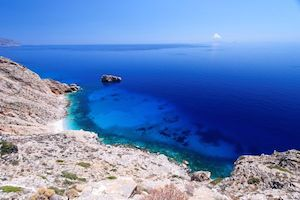
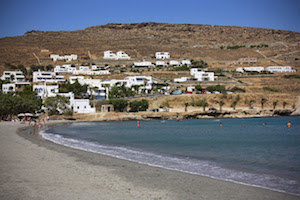
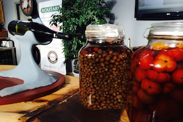
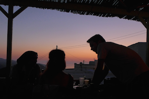

la vue

Des croix, des clochers, re-des croix, re-des clochers ! Et du blanc et du bleu. Nous avons tous dans notre iPhoto ces paysages de Grèce qui se ressemblent furieusement.
Mais si je ferme les yeux, maintenant tout de suite, je vois la mer, l'eau bleu turquoise et transparente d'Amorgos, les plages perdues du Sud, les grottes qui ne demandent qu'à venir y nager. Mon vrai coup de coeur, une île là-où-je-t-emmenerai.
l'odeur

Bienvenue à Tinos, la gourmande des Cyclades.
Des odeurs de cannelle, de sauge, et surtout, surtout, ma figue adorée, l'odeur de mon parfum - Philosykos de Dyptique. Mûres vers fin août, une odeur suave et enivrante au soleil. Encore.
le son

Epargnons-nous le sirtaki (a peu pres aussi reposant que de la cornemuse), Abba (Mamma Mia) et les vibes hype de Mykonos. Souvenir musical heureux d'un après-midi dans une petite plage perdue de Tinos, à écouter la musique so 80's des plagistes grecs.. mêlée de bons vieux tubes de chanson française.
#quedubonheur
le toucher

Un chaud pelage. Heureux comme un chat en Grèce, nos amis lézardent sous une ombre fraiche le jour, sur les pierres chaudes à la tombée du jour, jamais avares de soyeux calins et de vibrants ronrons.
Mes Cyclades sont le paradis des câlins félins.
le goût

Tiens, voilà de la fêta! La photo n'est que vaguement ressemblante, mais ce sont ses meilleurs amis. Partout, en abondance, et surtout en salade.
La meilleure salade: mas fêta, gros dés de tomates, demi tranches de concombre, câpres, olives kalamata charnues, fine lamelles de poivron vert et d'oignon rouge. Le tout mélangé trois fois successivement dans l'huile, avec un pause de 5 minutes entre chaque pour imprégner. On attend un peu l'entrée, mais qu'est ce que c'est bon!
le guy

Mamma mia, here I go again. My my, how can I resist you !? Finalement, on ne coupera pas à Abba.
Il est gentil, il est poli, et il sent bon le jus de citron-menthe-fraiche de son jardin. Le Jazzmin de Chora à Amorgos devient mon repère d'après-midi, blottie sur un coussin de la terrasse.
Je suis les conseils du l'amabilissime Giorgos, pour mes promenades du lendemain, mon resto de la soirée, ou du bon son doux dans mes oreilles. Aux petits soins pour tout ses hôtes, qu'est ce qu'il est bien.